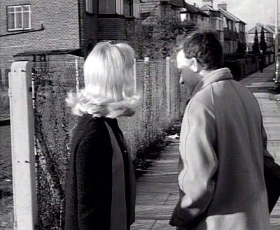
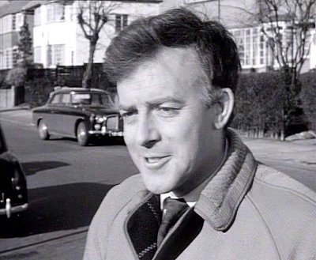
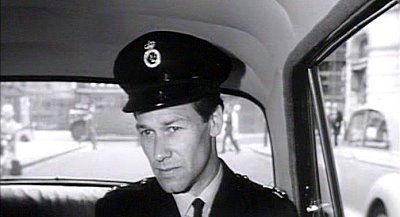
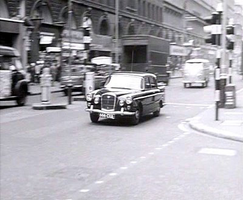
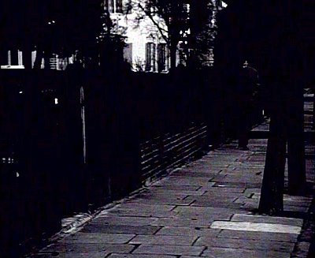
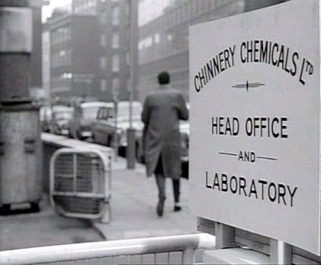
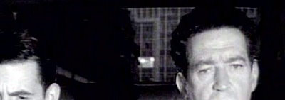
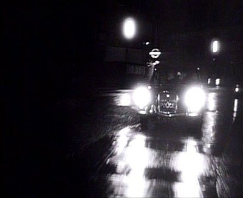
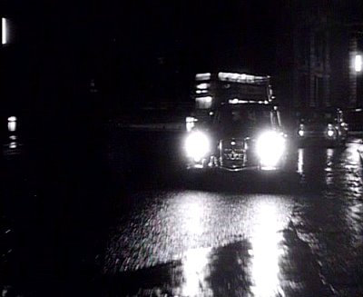

|
|
HELP FIND THE FOLLOWING LOCATIONS
GIDEON'S
WAY: Subway to Revenge
(Roy Baker: January 1965)
Q41: Dukes Avenue, Stanmore –
As he is in the area Commander Gideon (John Gregson)
takes the
opportunity to visit Martha Robson’s home (15 Dukes Avenue).
(Identified by Geoff Dodd, February 2024)

Unknown 1 – After leaving work James Lanegoes to catch his train home from the nearby tube station. Whilst waiting for a train to station Ellen Winters sees a man attempt to push James in front of an approaching train.


Unknown 2 – After arriving at their station Ellen Winters (Anne Lawson) interrogates James Lane (Donald Churchill) as to why he will not report an attempt on his life to the police.


 Jaz
Wiseman – July 2007 – “Looks like Edgware”
Jaz
Wiseman – July 2007 – “Looks like Edgware”
Unknown 3 – A police man is touring London handing out photo-fits of John Stewart.

Sandland
Street, London, WC1 – A
pair of plane clothed policemen are watched by John Stewart (Bryan
Pringle).
(Identified by Alan Field, November 5th 2009)

Victoria
Street, London, SW1 – A
police car is touring London
handing out photo-fits of John Stewart.
(Identified by Alan Field, November 5th 2009)


Q42 - Cavendish Drive,
Edgware –
James Lane (Donald Churchill) arrives
home (20 Cavendish Drive) but is being
watched by John Stewart (Bryan Pringle).
(Identified by Geoff Dodd, February 2024)



Peter’s Close, Stanmore –
Commander Gideon (John Gregson) and Detective
Chief Inspector David Keen
(Alexander Davion) are at number 29 arresting the
leader of a gang
involved in an armed robbery.
(Identified by Geoff Dodd, February 2024)


Riley Road, London, SE1 –
John
Stewart notices that police cars are searching the area.
(Identified by Geoff Dodd, February 2024)

Sandland
Street WC1 –
John Stewart (Bryan Pringle) leaves work early from
Chinnery Chemicals after seeing his photo fit in the papers.
(Identified by Alan Field, November 5th 2009)

Unknown 5 – Gideon and Keen set off in a police car to James Lane’s home. Later James Lane overhears the call for cars to got to 86 Wells Avenue whilst being taken home by two officers in a police car.



Unknown 6 – Gideon and Keen set off in a police car to James Lane’s home.



Unknown 7 – John Stewart is walking past a shop window display when a wedding scene sets him to thinking of a different form of revenge.

Think you know a spot? Need a bigger image? Email me.
< Previous | Index | Avengerland | Next >
Copyright © 2024 Anthony R. McKay